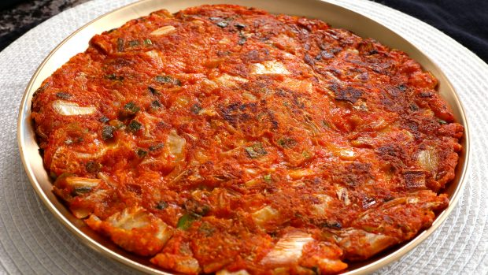

Kimchi Pancakes

Description
A kimchi pancake is one of the easiest and quickest things to make and is one of Koreans’ all time favorite dishes. It’s hot, spicy, crispy, a little sweet, sour, and a little salty. It is not only a great snack but also it goes well with rice as a side dish, and is great in lunchboxes in place of plain kimchi.
On a rainy day on the weekend, when a Korean family wants something special and cozy to eat, this is something anyone can make using the ingredients we have at home. Then mom will say: “You want me to make kimchijeon?” and everybody will say: “Yayyy!!”
How about having a Korean style kimchi pancake party with your family or friends? Enjoy the recipe and show me some photos of your kimchi pancake day!
Ingredients
- 2 cups Kimchi pancake mix - This can be bought from your local korean or asian grocery store.
- 1 cup Kimchi
- Spring onions
- 2 tablespoons Korean chilli pepper flakes
- 2 chilli peppers (optional)
- 1/2 teaspoon MSG
- 1 teaspoon sugar
Steps
- Roughly chop the kimchi and place into large mixing bowl.
- Finely chop spring onions and fresh chillis then combine with remaining ingredients into the mixing bowl.
- Add approximately 2 cups of water and mix well. You can add more water if needed to get the right consistency (still thick but a little runny, should be able to cling easily to a spoon).
- Heat a frying pan to medium heat and put a generous amount of oil in the pan.
- When oil is hot, pour some of the mixture in and spread quickly to make sure you get a nice and thin pancake. This will make the pancake crispier and less doughy.
- Enjoy!